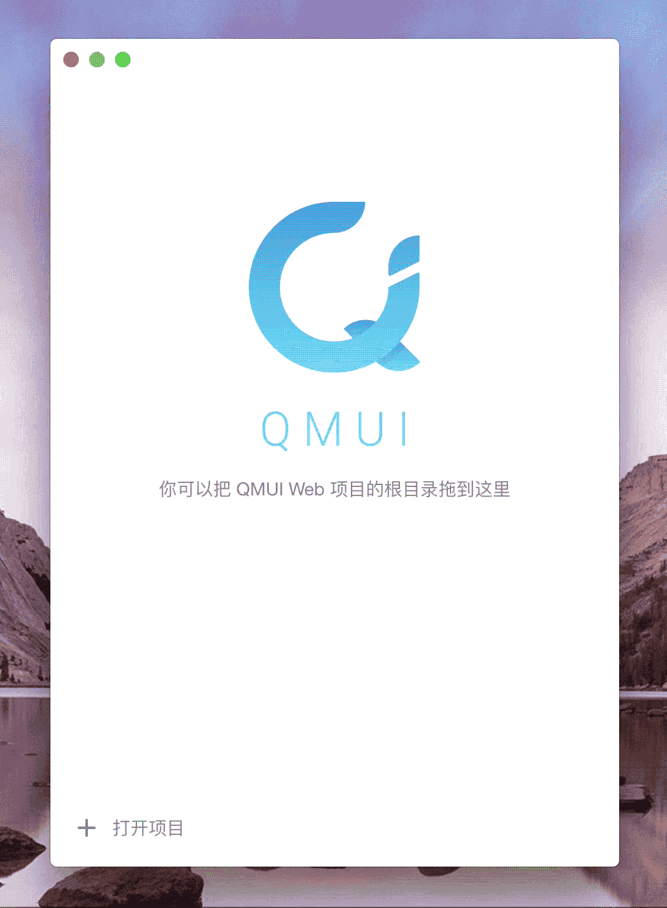

QMUI Web Desktop 是一款基于 QMUI Web 的桌面 App，包含 macOS 和 Windows 两个版本。它可以管理基于 QMUI Web 进行开发的项目，并提供了编译提醒，出错提醒，进程关闭提醒等额外的功能。
QMUI Web Desktop 本质是一个管理 QMUI Web 项目的管理器，因此使用 QMUI Web Desktop 之前首先要按 QMUI Web 使用流程配置项目。如果已经存在基于 QMUI Web 开发的项目，你可以点击 App 底部工具栏的 + 号按钮添加新项目，也可以直接把项目目录拖放到 App 上进行添加项目。
添加项目需要选择项目根目录，关于 QMUI Web 的项目结构可以参考这里。
你可以利用 QMUI Web Desktop 同时管理多个 QMUI Web 项目，除了可以调用 QMUI Web 原有的功能外，App 还提供了编译提醒，出错提醒，进程关闭提醒等额外的功能。
